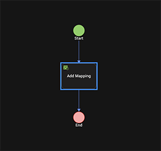

Create a Component
The most powerful way to create reusable components is to create a component that includes a defined contract. The contract is a JSON file that specifies the component's exposed properties, events, and methods. You can specify those properties, events, and methods within the Iris interface, and then define the behavior of custom properties, events, and methods by adding code to the component's controller module.
When you create a component, you have a choice of creating a component with or without a contract. A component without a contract is similar to a master in earlier versions of Volt MX Iris, except that it includes a controller module. You can also convert a component that does not have a contract, or an imported master, to a component with a contract.
Once you create a component with a contract, you can control what is exposed to users of the component. You expose only the properties, events, and methods that you want to make available to your target audience, enhancing your ability to rapidly create and deploy digitalapplications for different audiences. The exposed properties, events, and methods are part of the contract.

You can then use the component in other applications, or share your custom components with other digital application developers by publishing them to HCL Forge . For more information about using components, see Using Components.
Important: Parent value for components will always be null. In component controller code, this.view.parent will always return a null value.
The following topics provide additional information about creating components:
- Create a Component without Contract
- Create a Component with Contract
- Expose a Component's Widgets
- Data & Services Panel Support for Components
- Specify a Container Widget as a Target Container
- Expose a Component's Skins
- Lock a Component
- Manage Properties of a Component with Contract
- Manage Events of a Component with Contract
- Manage Methods of a Component with Contract
- Group Properties, Events, and Methods of a Component with Contract
- Set Data for Components with Contract by using Mapping Editor
- Map Service Parameters to the Segment in a Component
- Define the Behavior of a Custom Property in Code
- Define a Custom Event in Code
Create a Component Without Contract
A component without contract is similar to a Master in earlier versions of Volt MX Iris, except that a component includes a Controller module. You can reuse the component within your application and distribute it via HCL Forge . However, you cannot control which of the component's properties, events, and methods are exposed, or create custom properties, events, and methods. To control the exposed properties, events, and methods of a component, create a component with contract.
To create a component without contract, follow these steps:
- In the Project Explorer, click the Templates tab.
- Right-click Components, point to New, and then select w/o Contract. The Create new Component without Contract dialog box appears.
-
Enter a Namespace ,Name and Version for the component.
The component must follow this naming convention:
. ; for example, my.namespace.
The component version helps you track changes or upgrades made to the component.The new component without contract is created. The component includes a FlexContainer to contain any widgets that you add to the component and a Modules node, comprising the component's Controller and Actions Controller JavaScript files. The Actions Controller module is auto-generated and contains any defined action sequences.
-
Add widgets to the FlexContainer, just as you would for a standard form.
- Add code to the component's controller module or to actions for widgets on the form. To add code to widget actions, select the FlexContainer. On the Properties panel, on the Action tab, click Edit for the event to which you want to add code. For more information, refer Add Actions.
Create a Component With Contract
To create a reusable component that can be published to HCL Forge , create a component with contract. Components with a contract use the Volt MX Iris Reference Architecture: a structured, modular framework based on the Model-View-Controller (MVC) architecture. For more information on how to create a Volt MX Iris Reference Architecture project, refer Create a Volt MX Iris Reference Architecture Project.
To create a component with contract, follow these steps:
- In the Project Explorer, click the Templates tab.
- Right-click Components, point to New, and then select with Contract. The Create new Component with Contract dialog box appears.
-
Enter a Namespace ,Name and Version for the component.
The component must follow this naming convention:
. ; for example, my.namespace.
The component version helps you track changes or upgrades made to the component.The new component with contract is created. The component includes a FlexContainer to contain any widgets that you add to the component and a Modules node, comprising the component's Controller and Actions Controller JavaScript files. The Actions Controller module is auto-generated and contains any defined action sequences.
-
Add widgets to the FlexContainer, just as you would for a standard form.
- Add code to the component's controller module or to actions for widgets on the form. To add code to widget actions, select the FlexContainer. On the Properties panel, on the Action tab, click Edit for the event to which you want to add code. For more information, refer Add Actions.
- Manage properties, events, and methods for the component with contract. For more information, refer Manage Properties of a Component with a Contract, Manage Events of a Component with a Contract, and Manage Methods of a Component with a Contract.
Each component's controller module contains the JavaScript code associated with the component. You can add additional modules containing any supporting code to the Modules node. The actions Controller module is auto-generated and should not be modified.
Expose a Component's Widgets
Typically, a component comprises multiple widgets. Once you create a component with a contract, you can specify which of the component's widgets to expose to users.
To expose a component's widgets:
Select a component's widget on the Iris canvas or on the Templates tab of Project Explorer.
You can select a container widget or a child widget of a container widget.
Right-click the widget and select Expose Widget, or click on the Look tab in the Properties pane and set the Expose Widget property to On.
Volt MX Iris displays the Programmatic Key property. You can use the default value or specify a different programmatic key.
Note: The Expose property will allow a component creator to make the widget visible in the form or another component. A developer who is using the component cannot access the widget directly through code.
If you select a container widget, all widgets within the container will be exposed. If you do not want to expose an individual widget within the container widget, select the widget and set its **Expose Widget** property to _Off_.
Note: You can set the Expose Widget property of a container widget to Off but expose an individual widget within the container by setting its Expose Widget property to On.
Repeat the process for each widget that you want to expose.
Data & Services Panel Support for Components
Earlier, the ability to leverage Data & Services panel features for components was not supported in Volt MX Iris. From V8 SP4 Fixpack 20, you can directly drag and drop services from the Data & Services panel to a component. In addition, you can drag and drop individual parameters of a sample service to a component. This enhancement will enable you to quickly customize components according to your requirement, and reuse them at various places in your Volt MX Iris Classic and Volt MX Irisprojects. Furthermore, you can publish customized components to HCL Forge . You can leverage Data Panel support for both components with contract and components without contract. For more information on the Data & Services panel, click here.
Once you drag and drop a sample service from the Data & Services panel to a component, a corresponding project service is added. That particular project service and its associated parameters are auto-highlighted in the Data & Services panel. So if multiple components exist and when you select a specific component, only those services which have been added to that component are highlighted in the Project Services of the Data & Services panel. The Data & Services panel also allows you to view the mappings for each project service operation in the component. The onMapping Event of the operations in the component is not generated separately in the CodeGen. You can view the onMapping Event in the preShow Event of the component
Note: Currently, only the Details form and List form UI are supported for the drag and drop of services into a component; Entry form UI is not supported.
If the sample service that you are trying to add to a component has already been added to another component, a Conflict window appears. In such a scenario, you must perform any one of the following actions to resolve this issue:
- Select the Skip radio button, and then click OK to use the original service.
- If multiple instances of the same service exist and you want to use the original service, click Skip All.
-
Select the Replace radio button, and then click OK to use a new service.
- If multiple instances of the same service exist and you want to use a new service, click Replace All.

This section contains the following topics:
How to Create a Component with Services
Create a component and leverage sample services from the Data & Services panel. You can bundle these services to the required widgets of a component. You can directly drag and drop services into a component and customize it according to your requirement.
In this scenario, we will xthe List-Details (Employee) component from HCL Forge and add services to the widgets of the component. You can add parameters (for example, Name) to specific widgets (for example, empname Label) of the component. This component contains the following two screens:
- Employee List

- Employee Details
To import the List-Details (Employee) component and add services to the component, follow these steps:
-
In Volt MX Iris, create a new Sample App project , and then import the List-Details (Employee) component from HCL Forge .
The landing page of the List-Details (Employee) component is displayed on the Project Canvas and its associated widgets are displayed in the Project Explorer. -
To add services to the Employee List screen, follow these steps:
- In the Project Explorer, go to Mobile > Forms, and then click frmList. The list screen is displayed on the Project Canvas.
- Go to Data & Services panel > Sample Services, and then expand Employee Services.
-
Under the employees > get > Response > records operation, drag and drop the following parameters to the respective widgets:
- Name > empname
- Designation > designation
- Department > department

-
To add services to the Employee Details screen, follow these steps:
- In the Project Explorer, go to Mobile > Forms, and then click frmDetails. The details screen is displayed on the Project Canvas.
- Go to Data & Services panel > Sample Services, and then expand Employee Services.
-
Under the employees > get > Response > records operation, drag and drop the following parameters to the respective widgets:
- Designation > lblEmployeeDesignation
- Primary_Phone > callMobileFlex
- Email > emailFlex
- Department > departmentFlex
- Manager_Name > reportingToFlex

-
Go to Data & Services panel > Sample Services, and then expand Contacts.
-
Under the getContacts > Response > responseList operation, drag and drop the following parameters to the respective widgets:
- Name > lblEmployeeName
- Phone > callWorkFlex
The parameters are mapped to the corresponding component widgets, and the services are created in your Volt MX Foundry instance. In addition, the mappings are highlighted and displayed under Project Services on the Data & Services panel.
-
Click View Mapping for a service, and then click Generate Code to view the respective mappings of the operations in the component. Alternatively, you can go to Properties panel > Component, click Edit for the onMapping Event, and then click Generate Code.
- You can then reuse the updated component across your Volt MX Iris projects or publish this customized component to HCL Forge .
How to Use a Component with Services
Users can import the component with bundled services that you published on HCL Forge . They can then modify the component as per their requirement.
Consider a scenario where Valerie (a user who wants to create a CRM app) imports your Employee List-Detail component to Volt MX Iris. However, she does not want to view employee data. Instead, Valerie wants to view the data of her customers. She can use the Data Panel support for Components feature to map data from another service that fetches customer data to the widgets, wherever required. Valerie can leverage an Object service to fetch the data, and she can directly map the response parameters from the Data & Services panel.
Valerie can follow these steps to import the Employee List-detail component from HCL Forge and customize the services bundled with it:
- Create a new project in Volt MX Iris, and then import the component to Collection Library.
- Create a new form, say frm1.
- Drag and drop the component from Collection Library to frm1. The component is added to the form and the bundled services are displayed under Project Services of the Data & Services panel.
-
For the List and Details screen, add response parameters of the required Object service (that fetches customer data) to the corresponding widgets of the component. Response parameters of other services (such as Contacts) can also be used wherever necessary. The new parameters are mapped to the corresponding component widgets, and the services are created in Volt MX Foundry. Furthermore, the mappings are highlighted and displayed under Project Services on the Data & Services panel.
-
Click View Mapping for the service, and then click Generate Code to view all the mappings of the parameters in the component.
Alternatively, you can go to Properties panel > Component, click Edit for the onMapping Event, and then click Generate Code. - This component can now be used in the CRM app to display the list of customers on the Customer List screen and specific customers' information on the Customer Details screen.
Specify a Container Widget as a Target Container
A target container is a Container widget that can contain other child widgets. To specify a Container widget as a target container, set both its Expose Widget and Set As Target Container properties to On.
To specify a Container widget as a target container:
- Select the container widget on the Iris canvas or on the Templates tab of Project Explorer.
- Click on the Look tab in the Properties pane.
- Set the Expose Widget property to On, and then set the Set As Target Container property to On.
Note: If the Expose Widget property is set to Off, setting the Set As Target Container property to On will set both the Expose Widget and Set As Target Container properties to On.
Volt MX Iris displays the Placeholder property. The Placeholder property lets you specify further information or direction to a user; for example "Add Content Here" or "Drop Image Here."
Expose a Component's Skins
In addition to specifying which of a component's widgets to expose to users, you can specify the skins to expose.
To expose a component's skins:
- Select the component on the Iris canvas or on the Templates tab of Project Explorer.
- Select the Skin tab in the Properties pane and select the skin that you want to expose.
- Set the Expose Skins property to On.
- Repeat the process for each skin that you want to expose.
Lock a Component
To prevent your component from being modified by users, you can lock the component. Users will not be able to view or modify the component's source code.
To lock a component:
- Select the component on the Iris canvas or on the Templates tab of Project Explorer.
- Right-click the component and select Lock.
Manage Properties of a Component with a Contract
Once you create a component with a contract, you can specify which properties of the component to expose to users. The specified properties are called pass-through properties. You can also define custom properties.
To manage properties of a component with a contract:
- Click the Templates tab in the Project Explorer or the Library Explorer.
- Expand the components node, if necessary, and then select the component.
- In the Properties pane, click the Component tab.
- Click Manage Properties. Volt MX Iris displays the Manage Properties dialog box.
- To define pass through properties, select the Pass Through tab on the Manage Properties dialog box.
Click the plus sign (+) for each pass-through property you want to define. Click the delete symbol (X) to delete an existing property. To define a new pass-through property, specify the following for each property:
- Source Widget The widget that contains the property. Click in the Source Widget field to display a hierarchical list of the component's widgets, and then select the widget.
Note: In Volt MX Iris version, you can add i18N properties also as a pass-through property. However, the i18N properties cannot be changed dynamically at runtime. When the i18N properties of a text is made pass-through, the corresponding text property is also made pass-through.
From the Volt MX Iris V9 SP2 FP7 release, you can add the accessibilityConfig property also as a pass-through property using the Property panel and Manage Properties window. While using Property panel, you must make the entire Accessibility Config section as pass through and not the individual fields.
- Widget Property The property that you want to define as a pass-through property. Click in the Widget Property field to display a list of the source widget's properties, and then select the property.
- Display Name The name to display in the Component tab of the Properties pane. Click in the Display Name field and enter a name. The display name should start with a non-numeric character, and can contain only alphanumeric characters and spaces.
- Programmatic Name The name to identify the property in code. Click in the Programmatic Name field, and enter a name. The programmatic name can contain only alphanumeric characters, and cannot start with a number or contain spaces.
- Tooltip: Enter the information about the property. Developers can enter detailed information about the property to convey the functionality of the property. When a user hovers over the property of the component, information entered in this property will appear.
- Group The group to which the property belongs. Use groups to display related properties in their own section in the Properties pane.
- Access Whether the property is enabled or disabled. Click in the Access field, and select either Enable or Disable.
-
Conditions: Set a property as a conditional property. You can also define dependent properties. Based on the value of the conditional property, dependent properties will be shown or hidden on the property panel.
To set a conditional property, in the Manage Properties section of the Properties panel, click the Conditions column corresponding to the property. Click Define Properties to set dependant properties. Select the Type of Property (either pass-through or custom), and provide the name of the Dependant Property, and then click Done. In the Conditions dialog box, click Set Visibility for a conditional value to set the show/hide conditions for the property on the Properties Panel. -
All conditional values must be unique. You cannot set the same dependant property for different conditional properties.
- The supported data types for the property are String, Integer, Boolean, List Selector.
- You cannot define cyclic dependencies and dependant properties for Templates, Image Identifiers, and Flex Properties.
- You cannot set forkable properties as conditional properties. Only properties of type String, Integer, Boolean, and List Selector (that do not support forking) can be set as conditional properties.
- If a property does not support conditions, the Conditions button is disabled and a tool tip appears with the This property can't be used as a conditional property message.
- Properties that are already implicitly dependent on other properties cannot be set as dependent properties. For example, The Separator Thickness property of the Segment widget is implicitly dependent on the Separator property, and therefore cannot be set as a dependent property.
- If you add a component with defined conditional properties into another component, the conditional properties of the child component are not retained as part of the parent component. You must define the properties as pass through properties for the parent component again.
Click Apply to add the pass-through property.
Note: You can also designate a widget's property as a pass-through property by navigating to the widget and right-clicking on the property name.
- To define custom properties, select the Custom tab on the Manage Properties dialog box.
Click the plus sign (+) for each custom property you want to define. Click the delete symbol (X) to delete an existing property. To define a new custom property, specify the following for each property:
- Property Name The name you want to give the property. Click in the Property Name field and enter a name. The property name can contain only alphanumeric characters, and cannot start with a number or contain spaces. The property name is used to refer to the property in code.
Note: From Volt MX Iris V9 SP2 version, you can also add i18N properties as a custom property. However, you cannot modify the i18N properties dynamically at runtime.
- Display Name The name to display in the Component tab of the Properties pane. Click in the Display Name field and enter a name. The display name should start with a non-numeric character, and can contain only alphanumeric characters and spaces.
- Tooltip: Enter the information about the property. Developers can enter detailed information about the property to convey the functionality of the property. When a user hovers over the property of the component, information entered in this property will appear.
- Property Type The data type of the property. Click in the Property Type field, and select a value, either boolean, List Selector, String, or HTML, Data Grid, Integer, JSON.
- Value For a property with a List Selector data type, the key-value pairs that make up the list. If the property type value is List Selector and you click in the Value field, Volt MX Iris displays the Key Value Popup dialog box. Enter the values and click OK. For a boolean property type, the Value field is automatically set to true/false. For other property types, the value field is not applicable.
-
Default Value The default property value. Click in the Default Value field, and enter a default value.
When you click the default value field for a HTML property, a new HTML editor appears. Enter the HTML code in the HTML Editor window.
When you click the default value field for a JSON property type, a new JSON editor appears. Enter the JSON code in the JSON Editor window.
-
Group The group to which the property belongs. Use groups to display related properties in their own section in the Properties pane.
- Read/Write Whether the property is read-only or read-write. Click in the Read/Write field, and select either Read or Write.
- Conditions: Set a property as a conditional property. You can also define dependent properties. Based on the value of the conditional property, dependent properties will be shown or hidden on the property panel.
To set a conditional property, in the Manage Properties section of the Properties panel, click the Conditions column corresponding to the property. Click Define Properties to set dependent properties. Select the Type of Property (either pass-through or custom), and provide the name of the Dependent Property, and then click Done. In the Conditions dialog box, click Set Visibility for a conditional value to set the show/hide conditions for the property on the Properties Panel.
Conditional rendering of properties has been introduced to de-clutter the Properties Panel during the designing phase. Configuring conditions does not affect the properties or the values of the properties at runtime. Users can access the properties at runtime irrespective of any conditions configured for the property. Following is a list of limitations that you must consider when you configure conditions for a custom property:
- All conditional values must be unique. You cannot set the same dependent property for different conditional properties.
- The supported data types for the property are String, Integer, Boolean, List Selector.
- You cannot define cyclic dependencies and dependent properties for Templates, Image Identifiers, and Flex Properties.
- You cannot set forkable properties as conditional properties. Only properties of type String, Integer, Boolean, and List Selector (that do not support forking) can be set as conditional properties.
- If a property does not support conditions, the Conditions button is disabled and a tool tip appears with the This property can't be used as a conditional property message.
- Properties that are already implicitly dependent on other properties cannot be set as dependent properties. For example, The Separator Thickness property of the Segment widget is implicitly dependent on the Separator property, and therefore cannot be set as a dependent property.
- If you add a component with defined conditional properties into another component, the conditional properties of the child component are not retained as part of the parent component. You must define the properties as pass through properties for the parent component again.
Click Apply to add the custom property.
Important: Unlike a pass-through property, which is based on an existing property of the component, a custom property has no built-in behavior. You must define the property's behavior programmatically. On the Templates tab, expand the component's Modules node, open the controller module, and add code defining the property's behavior to the controller code. For more information, see Define the Behavior of a Custom Property, Event, or Method in Code.
Reorder Properties or Groups
From Volt MX Iris V9 SP2 GA, you can specify the order of the properties or groups in the Properties panel. Within a group you can reorder the properties.
To reorder properties of a component with contract, follow these steps:
Pre-requisites: Pass-through properties or Custom properties must be defined for the component. For more information on how to define these properties, refer Manage Properties of a Component with a Contract.
- In Volt MX Iris, open the project.
- In the Project explorer, click Templates.
- Expand Components.
- Select the component for which you want to reorder the properties.
The component Properties panel appears on the right-hand side with the Component tab open by default. - Click Manage Properties.
The Manage Properties window appears. -
Click Reorder Properties.
The Reorder Properties window appears. -
Select the group or property that you want to reorder.
- Use the up or down arrow icons to reorder.
- Click Apply.
The new order is successfully applied.
Manage Events of a Component with a Contract
In addition to specifying pass-through properties, you can specify which of the component's events to expose to users. You can also define custom events.
To manage events of a component with a contract:
- Click the Templates tab in the Project Explorer or the Library Explorer.
- Expand the components node, if necessary, and then select the component.
- In the Properties pane, click the Action tab.
- Click Manage Events. Volt MX Iris displays the Manage Events dialog box.
- To define pass-through events, select the Pass Through tab on the Manage Events dialog box.
Click the plus sign (+) for each pass-through event you want to define. To delete an existing event, select the event and click the delete symbol (X). To define a new pass-through event, specify the following for each event:
- Source Widget The widget that contains the event. Click in the Source Widget field to display a hierarchical list of the component's widgets, and then select the widget.
- Event The event that you want to define as a pass-through event. Click in the Event field to display a list of the source widget's events, and then select the event.
- Programmatic Name The name to identify the event in code. Click in the Programmatic Name field and enter a name. The programmatic name can contain only alphanumeric characters, and cannot start with a number or contain spaces.
- Group The group to which the event belongs. Use groups to display related events in their own section on the Action tab of the Properties pane.
Click Apply to add the pass through event. Volt MX Iris adds the event to the Pass Through section of the Properties pane's Action tab.
- To define custom events, select the Custom tab on the Manage Events dialog box.
Click the plus sign (+) for each custom event you want to define. Click the delete symbol (X) to delete an existing event. To define a new custom event, specify the following for each event:
- Raised Event The name you want to give the event. Click in the Raised Events field and enter a name. The event name can contain only alphanumeric characters, and cannot start with a number or contain spaces.
- Group The group to which the event belongs. Use groups to display related events in their own section on the Action tab of the Properties pane.
To add parameters to the custom event, click the Manage Events button, and specify the parameter information in the dialog box.
Click Apply to add the custom event. Volt MX Iris adds the event to the Custom section of the Properties pane's Action tab.
Important: Unlike a pass-through event, which is based on an existing event of the component, a custom event has no built-in behavior. You must define the event's behavior programmatically. On the Templates tab, expand the component's Modules node, open the controller module, and add code defining the event's behavior to the controller code. For more information, see Define the Behavior of a Custom Property, Event, or Method in Code.
Expose Events of a Component
From Volt MX Iris V9 Service Pack 2, you can select lifecycle events of the component and events of the child widgets present in the component as a pass-through event.
To add a widget's event as a pass-through event in a component, follow these steps:
- Navigate to the Templates tab of the Project Explorer, and select the component.
- From the Properties Panel, right-click an event, and then select one of the following options:
- Add Event to Component: The event is added as a pass-through event to the component.
- Add Event to Component with Action Sequence: The event along with the associated action sequence is added as a pass-through event to the component.
Limitations:
When you select the Add Event to Component with Action Sequence option, the action sequence is translated at runtime. However, the action sequence is not created if it contains actions that cannot be translated.
- The following actions can be translated as part of the action sequence based on the existence of a criteria:
- Set Widget Property
- If Condition
- Else Condition
- Else If Condition
- Add Mapping
- Invoke Service
- Pass-through properties or top-level flex properties
For example, the Set Widget Property of a Button widget with the text property can be translated, if the text property is a pass-through property.
- The following actions cannot be translated as part of the action sequence:
- Move
- Scale
- Rotate
- Rotate 3D
- Transform
- Style
- Invoke Function
- Add Snippet
- Set Map Location
- Raise Custom Event
Manage Methods of a Component with a Contract
In addition to specifying pass through properties and events, you can specify which of the component's methods to expose to users. You can also define custom methods.
To manage methods of a component with a contract:
- Click the Templates tab in the Project Explorer or the Library Explorer.
- Expand the components node, if necessary, and then select the component.
- In the Properties pane, click the Action tab.
- Click Manage Methods. Volt MX Iris displays the Manage Methods dialog box.
- To define pass-through methods, select the Pass Through tab on the Manage Methods dialog box.
Click the plus sign (+) for each pass-through method you want to define. Click the delete symbol (X) to delete an existing method. To define a new pass-through method, specify the following for each method:
- Source Widget The widget that contains the method. Click in the Source Widget field to display a hierarchical list of the component's widgets, and then select the widget.
- Method The method that you want to define as a pass-through method. Click in the Method field to display a list of the source widget's methods, and then select the method.
- Programmatic Name The name to identify the method in code. Click in the Programmatic Name field and enter a name. The programmatic name can contain only alphanumeric characters, and cannot start with a number or contain spaces.
- Group The group to which the event belongs. Use groups to display related events in their own section on the Action tab of the Properties pane.
Click Apply to add the pass-through method.
To define custom properties, select the Custom tab on the Manage Methods dialog box.
Click the plus sign (+) for each custom method you want to define. Click the delete symbol (X) to delete an existing method. To define a new custom method, specify the following for each method:
- Method The name you want to give the method. Click in the Method field and enter a name. The method name can contain only alphanumeric characters, and cannot start with a number or contain spaces.
- Group The group to which the event belongs. Use groups to display related events in their own section on the Action tab of the Properties pane.
To add parameters to the custom method, click the Manage Methods button, and specify the parameter information in the dialog box.
Click Apply to add the custom method.
Important: Unlike a pass-through method, which is based on an existing method of the component, a custom method has no built-in behavior. You must define the method's behavior programmatically. On the Templates tab, expand the component's Modules node, open the controller module, and add code defining the method's behavior to the controller code. For more information, see Define the Behavior of a Custom Property, Event, or Method in Code.
Group Properties, Events and Methods of a Component with a Contract
When you define pass-through or custom properties, events, and methods for a component, you can specify how they are displayed in the Properties pane by organizing them in groups.
For example, you can specify that two custom properties are displayed in a group under the heading, "General," and that a third property is displayed under the heading "Special" by defining them as follows in the Manage Properties dialog box.

The properties will be displayed in the Properties pane.
You can also group both pass-through and custom properties under the same heading. For example, the following General properties of the Rating Prompt component include a mixture of pass-through and custom properties:


To group properties of a component with a contract:
- Follow the steps in Manage Properties of a Component with a Contract to define a pass-through or custom property.
-
Under Group, specify the group where you want the property to be displayed.
If the group name does not exist, click in the Group field, select Manage Group to open the Manage Groups dialog box, and then add the group name.
-
Click Apply to add the custom property.
To group events of a component with a contract:
-
Follow the steps in Manage Events of a Component with a Contract to define a pass-through or custom event.
- Under Group, specify the group where you want the event to be displayed.
If the group name does not exist, click in the Group field, select Manage Group to open the Manage Groups dialog box, and then add the group name.
-
Click Apply to add the custom event.
To group methods of a component with a contract:
-
Follow the steps in Manage Methods of a Component with a Contract to define a pass-through or custom method.
-
Under Group, specify the group where you want the method to be displayed.
If the group name does not exist, click in the Group field, select Manage Group to open the Manage Groups dialog box, and then add the group name.
Click Apply to add the custom method.
Set Data for Components with Contract by using Mapping Editor
To set data for a component with contract by using Mapping Editor, follow these steps:
In Volt MX Iris, create a component with contract, add the required widgets, define the pass through and custom properties of the component, and then click Apply.


- In Project Explorer, select the form into which you want to insert the component with contract.
- Go back to Templates > Components, and right-click the newly created component. A list of options appears.
- Click Insert Into. The component with contract is inserted into the selected form.
- Select the form, and then go to Properties panel > Action.
- For any Event (for example, onMapping), click Edit. The Action Editor window appears, with Diagram View open by default.
-
On the left pane of Action Editor, locate and click the Add Mapping action. The Add Mapping action is added to the flow diagram, as shown here.
 8. Select Add Mapping from the flow diagram. Mapping Editor opens on the right pane of Action Editor. 9. You can use Mapping Editor to expand and create mappings among various form, component, and widget elements as well as global variables.
 10. Click Code View to see the generated sample code details of the data mappings.
10. Click Code View to see the generated sample code details of the data mappings. -
Click Save. You have successfully set data for the component with contract by using Mapping Editor.
Define the Behavior of a Custom Property in Code
When you create a component with a contract, you can define pass-through and custom properties, events, and methods for the component. Defining pass-through properties, events, and methods does not require that you write code. You simply specify the built-in properties, events, and methods that you want to expose. However, a custom property, event, or method does not have any built-in behavior. You must define its behavior in code.
First, specify a name for the custom property, event, or method using the Manage Properties dialog box. For a custom property, you can also specify a display name, data type, and default value, and whether the property is read-only or read-write. If the property has a list selector, you can specify the key value pairs that make up the list. For more information on working with the Manage Properties dialog box, see Manage Properties of a Component with a Contract, Manage Events of a Component with a Contract, or Manage Methods of a Component with a Contract.
Once you specify information in the Manage Properties dialog box, you can add code to the component's controller module to define the behavior of the custom property, event, or method.
Note: From Volt MX Iris V9 Service Pack 2, when you create or modify a custom property through the Manage Properties dialog box, the getters and setters of the property are automatically added to the
initGettersSettersfunction in the controller file of the component. However, when you delete a custom property, you must manually remove the code pertaining to the property.
To define the behavior of a custom property, event, or method in code (Beta):
- Specify the required information in the Manage Properties dialog box.
- On the Templates tab, expand the Modules node of the component that contains the property, event, or method.
-
Open the component's controller module; for example, loginController.js.
-
Add JavaScript code that defines the behavior of the property, event, or method.
For example, the following code defines custom properties for the Login component, which can be downloaded from HCL Forge .
/**
* @function initGettersSetters
* @description contains getters/setters for the usernameMinimumChar and usernameValidationMsg custom properties
*/
initGettersSetters: function() {
defineGetter(this, "usernameMinimumChar", function() {
voltmxmp.logger.trace("----------Entering usernameMinimumCharacter Getter---------", voltmxmp.logger.FUNCTION_ENTRY);
return this._usernameMinimumChar;
});
defineSetter(this, "usernameMinimumChar", function(val) {
voltmxmp.logger.trace("----------Entering usernameMinimumCharacter Setter---------", voltmxmp.logger.FUNCTION_ENTRY);
try {
if (val == null || val == undefined) {
voltmxmp.logger.warn("Username Min Char is undefined");
throw {
"Error": "LoginComponent",
"message": "Username Min Char is undefined"
};
}
if (isNaN(val)) {
voltmxmp.logger.warn("Invalid datatype for Username Min Characters Property");
throw {
"Error": "LoginComponent",
"message": "Invalid datatype for Username Min Characters Property"
};
}
if (this.usernameMaxChar & amp; lt; val) {
voltmxmp.logger.warn("usernameMaxChar is less than usernameMinimumChar");
throw {
"Error": "LoginComponent",
"message": "username Max Char is less than Username Min Character propert"
};
}
this._usernameMinimumChar = val;
} catch (exception) {
if (exception["Error"] === "LoginComponent")
alert(JSON.stringify(exception));
}
});
defineGetter(this, "usernameValidationMsg", function() {
voltmxmp.logger.trace("----------Entering usernameValidationMsg Getter---------", voltmxmp.logger.FUNCTION_ENTRY);
return this._usernameValidationMsg;
});
defineSetter(this, "usernameValidationMsg", function(val) {
voltmxmp.logger.trace("----------Entering usernameValidationMsg Setter---------", voltmxmp.logger.FUNCTION_ENTRY);
this._usernameValidationMsg = val;
});
}
Define a Custom Event
Creating and using a Custom Event involves three stages, creating a custom event, invoking the custom event, and consuming the custom event.
To create, consume, and invoke a custom event, do the following:
- In your Iris Project, from the Project Explorer section, click Templates tab.
- From Components, select Create new Component with Contract.
- Enter the Namespace
- Enter Name
-
Click OK.
-
Navigate to Project
- Navigate to Mobile > Forms > New Form. A new form is created.
- Navigate to the Templates tab, and drag and drop the new template you created earlier onto this form. Your component is created, and it is added to the form. Now, let us define a custom event.
- Navigate to the component you created.
- In the Properties pane, click Action.
- Click Manage Events. The Manage Events pane displays.
- Click Custom tab.
- Click on the + sign to add a new custom event.
- In the RaisedEvents column, enter a name for your event. For example, testEvent.
- Click Apply. The event is created, and you can view it in the Action tab under General. Now, the custom event is defined. Let us now invoke the custom event.
- In your component, add a button.
- Name the button. For example, Trigger Event.
- In the Properties pane of the button, navigate to the Action tab and click onClick event Edit button. The Action Editor opens.
- From the list of functions available, select Raise Event.
- From the Function Name dropdown, select testEvent.
- Close the Action Editor. Now, let us consume the event.
- Navigate to your form on your Mobile channel.
- On the form, select the component and from the Properties pane, click Action tab.
- Under General, you will notice the testEvent you created. Click Edit. The Action Editor opens.
- From the Functions list, select Add Snippet.
- In the code pane, enter
alert(Yay! Custom event); - Close the action editor.
- From the File Explorer menu of Iris, from Run, select Run.
- The Building pane appears.
- Navigate to your local preview. For more information on how to preview your app locally, click here. You will see your form in local preview in chrome.
- Click Trigger Event.
An alert Yay! custom event is displayed. - Click OK to close the alert.